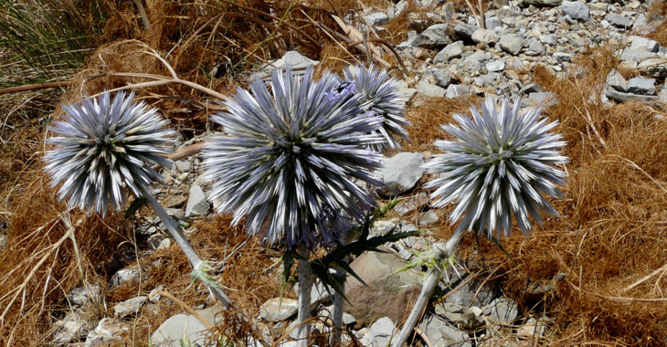
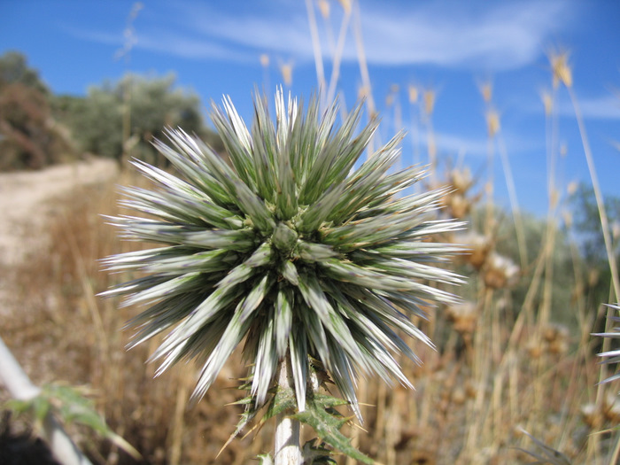
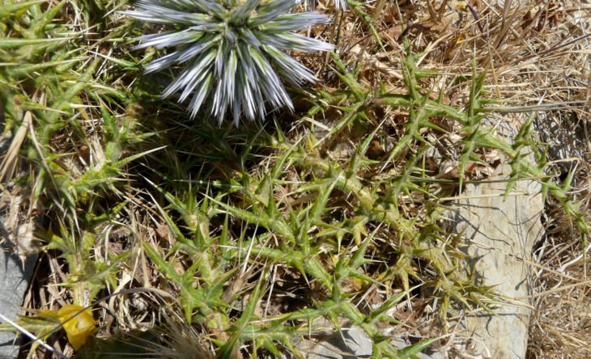
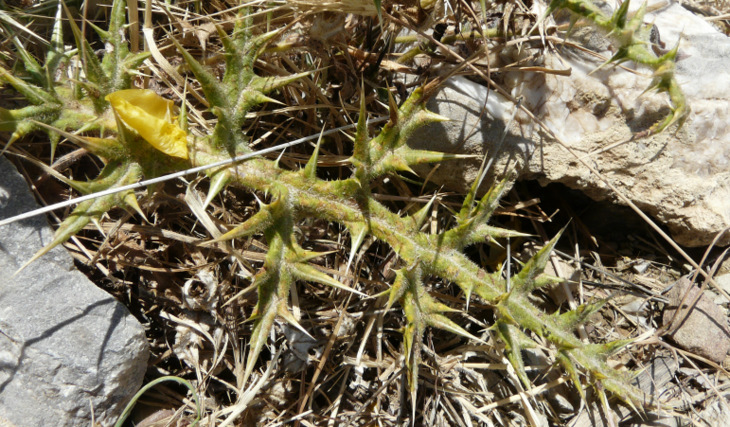
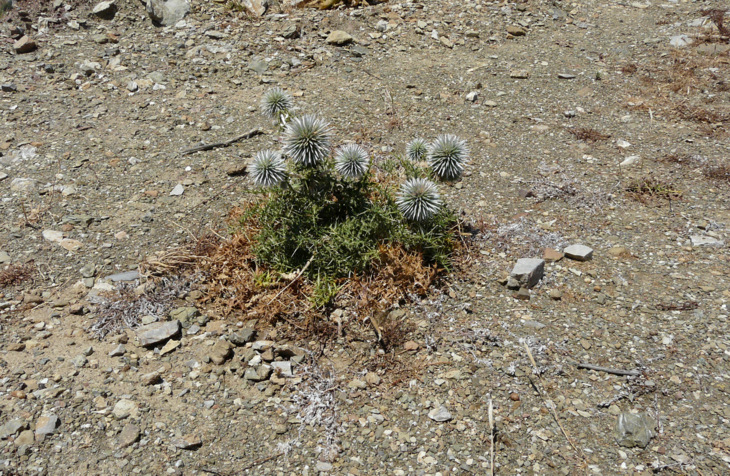

")
| PHRYGANA | Fauna | Flora | nouveautés | liste des espèces |
contact -
info - commentaires phrygana1 (at) gmail.com |
| Particularités crétoises | Galles et mines | ressources naturelles |
| Echinops spinosissimus TURRA subsp. spinosissimus |
| 130 | Flora | ASTERACEAE | Cardueae | Echinops L. |
 Echinops spinosissimus subsp. spinosissimus Melambes (Agios Giorgos) 23 mai 2010 |
| Synonyme: Echinops viscosus DC. | |
| Feuilles: oblongues - lancéolées, profondément découpés en lobes allongés pointus, terminés par une longue épine. Face supérieure couverte de poils glanduleux jaunâtres. Nervure centrale bien marquée. | |
| Tige couverte de poils aranéeux serrés blanc grisâtre (feutre) et de poils épars glanduleux brun purpurin foncé. | |
| Fleurs: grosse tête en boule (35 à 55 mm) bleu clair à blanc bleuâtre. | |
| Hauteur: 50 - 200 cm | Type biologique: hémicryptophyte ramifié |
| Floraison: mai juin juillet août septembre (- octobre) | |
| Altitudes: 1 – 1600 (-1900) m | |
| Statut en Crète: indigène -- native | |
| Biotopes en Crète: phryganas, olivaies, bords des routes, terrains vagues, champs abandonnés, terrains secs rocailleux. | |
| Distribution: région Méditerranéenne orientale | |
| Plante-hôte pour: | ||
|
|
||
| Eublemma ostrina | ||
|
 Echinops spinosissimus subsp. spinosissimus Apodoulou 05 juin 2005 |
|
 Echinops spinosissimus subsp. spinosissimus Melambes (Agios Giorgos) 23 mai 2010 |
 Echinops spinosissimus subsp. spinosissimus Melambes (Agios Giorgos) 23 mai 2010 |
 Echinops spinosissimus subsp. spinosissimus Melambes (Agios Giorgos) 23 mai 2010 |
| 15 janvier 2012 |
| © paul fontaine -- © Phrygana.eu 2007 -- 2013 |